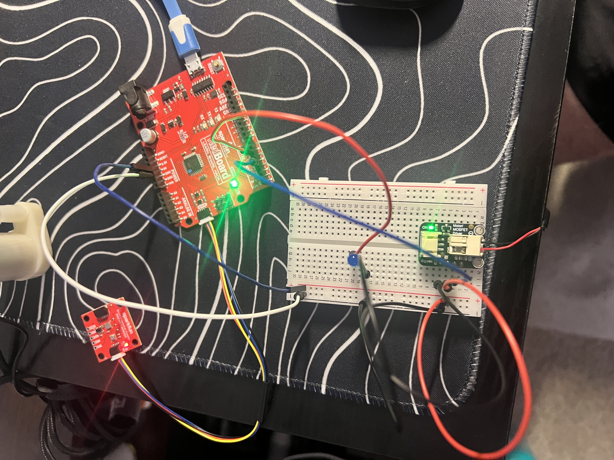
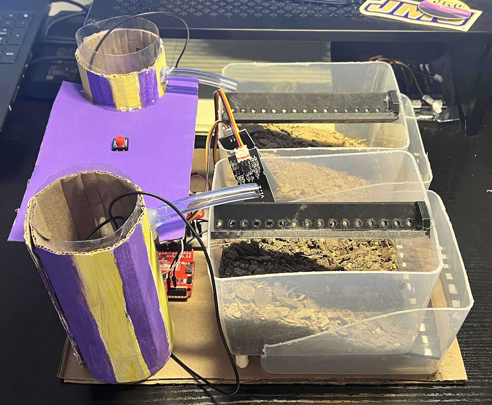

Arduino-based embedded system for soil monitoring and autonomous pump control
This project developed a fully autonomous embedded system capable of monitoring soil moisture and controlling water pumps without user intervention. The system integrates analog sensing, power electronics, and microcontroller logic to maintain plant health through automated feedback-based control, preventing both underwatering and surface runoff caused by rapid oversaturation.
Initial testing focused on validating core functionality using a simplified breadboard configuration. This early prototype included an Arduino microcontroller, a single ST0160 capacitive soil moisture sensor, a MOSFET driver circuit, and an indicator LED. The objective was to confirm reliable sensor readings, pump control logic, and user feedback before expanding to a full multi-pump system.
 Initial breadboard prototype used to verify sensing and pump actuation logic.This configuration enabled rapid iteration of control strategies and allowed tuning of threshold values and timing behavior before permanent integration. Testing determined that a dryness threshold of approximately 550 on the Arduino’s 10-bit ADC scale (0–1023) provided reliable activation for the selected sensor.
A block diagram of the system will be added to illustrate signal flow between the moisture sensors, Arduino controller, MOSFET driver circuits, and pumps. This diagram will be developed and refined alongside upcoming coursework in control systems.
 Planned system block diagram showing sensors, controller, and pump drivers.
Planned system block diagram showing sensors, controller, and pump drivers.
The completed system expanded upon the prototype to include dual pumps, enclosure mounting, and a dedicated manual override function. All components were powered from a common 5V supply, simplifying wiring and allowing safe low-voltage operation.
 Fully integrated system with Arduino controller, sensors, and dual pumps.The final design supports both automatic moisture-based watering and a pushbutton-activated manual mode for on-demand operation. An LED indicator provides immediate visual feedback when the soil is adequately moist and no watering is required.
The system software was written in Arduino C++ and implements a pulsed pump strategy to prevent overwatering and allow soil absorption between cycles. Moisture levels are continuously monitored, and pumps are activated only when readings exceed the defined dryness threshold.
Testing showed that pump pulses of 500 ms ON followed by 3 seconds OFF cycles effectively hydrated soil without causing surface pooling or runoff. This approach reduced unnecessary water usage and minimized electrical and mechanical stress on the pumps.
Key features of the control logic include:
The full embedded control program used in the project is shown below.
const int sensor1Pin = A0;
const int sensor2Pin = A2;
const int pump1Pin = 3;
const int pump2Pin = 5;
const int buttonPin = 2;
const int ledPin = 6; // Added LED pin
const int dryThreshold = 550; // Adjust based on sensor
// Pulsing settings
const unsigned long pumpOnTime = 500; // 0.5s ON per pulse
const unsigned long pumpOffTime = 3000; // 3s OFF between pulses
const unsigned long manualDuration = 10000; // 10s total manual mode runtime
// State variables
bool manualMode = false;
bool pumpRunning = false;
unsigned long lastPulseTime = 0;
unsigned long manualStartTime = 0;
void setup() {
Serial.begin(9600);
pinMode(pump1Pin, OUTPUT);
pinMode(pump2Pin, OUTPUT);
pinMode(ledPin, OUTPUT); // Initialize LED pin
pinMode(buttonPin, INPUT_PULLUP);
digitalWrite(pump1Pin, LOW);
digitalWrite(pump2Pin, LOW);
digitalWrite(ledPin, LOW); // Start with LED off
Serial.println("System ready. Auto-pulsing active.");
}
void loop() {
int sensor1Value = analogRead(sensor1Pin);
// handle button press (with debounce)
if (digitalRead(buttonPin) == LOW && !manualMode) {
manualMode = true;
manualStartTime = millis();
Serial.println("MANUAL OVERRIDE: Pulsing mode activated");
delay(200); // Debounce
}
// Automatic Pulsing Mode
if (!manualMode) {
if (sensor1Value > dryThreshold) {
// Pulse the pump (ON/OFF cycle)
if (millis() - lastPulseTime >= pumpOffTime && !pumpRunning) {
digitalWrite(pump1Pin, HIGH);
pumpRunning = true;
lastPulseTime = millis();
Serial.print("AUTO-PULSE: Pump ON (Dryness: ");
Serial.print(sensor1Value);
Serial.println(")");
}
else if (pumpRunning && millis() - lastPulseTime >= pumpOnTime) {
digitalWrite(pump1Pin, LOW);
pumpRunning = false;
Serial.println("AUTO-PULSE: Pump OFF");
}
}
else {
digitalWrite(pump1Pin, LOW);
pumpRunning = false;
}
}
// Manual Pulsing Mode (with timeout)
if (manualMode) {
if (millis() - manualStartTime < manualDuration) {
if (millis() - lastPulseTime >= pumpOffTime && !pumpRunning) {
digitalWrite(pump1Pin, HIGH);
digitalWrite(pump2Pin, HIGH);
pumpRunning = true;
lastPulseTime = millis();
Serial.println("MANUAL-PULSE: Pumps ON");
}
else if (pumpRunning && millis() - lastPulseTime >= pumpOnTime) {
digitalWrite(pump1Pin, LOW);
digitalWrite(pump2Pin, LOW);
pumpRunning = false;
Serial.println("MANUAL-PULSE: Pumps OFF");
}
}
else {
manualMode = false;
digitalWrite(pump1Pin, LOW);
digitalWrite(pump2Pin, LOW);
Serial.println("MANUAL OVERRIDE: Timeout - Returning to auto mode");
}
}
// LED Control - ON when soil is wet AND pump isn't running
if (sensor1Value <= dryThreshold && !pumpRunning && !manualMode) {
digitalWrite(ledPin, HIGH); // Turn LED on when conditions are met
} else {
digitalWrite(ledPin, LOW); // Otherwise keep LED off
}
delay(50); // Small delay to reduce CPU load
}
The final system successfully demonstrated the benefits of automated, incremental watering compared to manual or continuous pump operation. During demonstration testing, soil that was allowed to dry excessively exhibited immediate surface runoff when watered. In contrast, soil maintained by the automated pulsing system absorbed water gradually with no runoff, confirming the effectiveness of the control strategy.
The project validated that low-cost capacitive sensors and simple timing-based control can maintain stable moisture conditions with minimal hardware complexity. The system operated reliably over extended testing periods and required no user interaction beyond initial setup.
Developing this system provided valuable practical experience beyond basic classroom exercises. One major takeaway was the importance of designing control logic around real-world constraints. Early versions of the program ran the pump continuously, which quickly revealed issues with overwatering and unnecessary power consumption. Implementing a pulsed control strategy with timed ON and OFF cycles resulted in more reliable and efficient operation.
Another key lesson involved hardware and software interaction. Sensor readings were found to fluctuate based on soil conditions, wiring quality, and power supply noise. This required experimenting with threshold tuning, timing delays, and serial debugging to achieve stable performance. These adjustments reinforced the need to test embedded systems in realistic conditions rather than relying solely on ideal assumptions.
The project also highlighted the value of incremental prototyping. Starting with a minimal breadboard configuration allowed rapid debugging of the MOSFET driver circuit and moisture sensor interface before integrating additional pumps and features. This staged approach reduced troubleshooting time and made problems easier to isolate.
Finally, implementing a manual override button emphasized the importance of user interaction in embedded design. Building safeguards such as automatic timeouts and clear LED status indicators improved usability and prevented unintended continuous operation.
Overall, this project strengthened skills in embedded programming, electrical integration, and system-level thinking while demonstrating how iterative testing leads to practical and dependable engineering solutions.